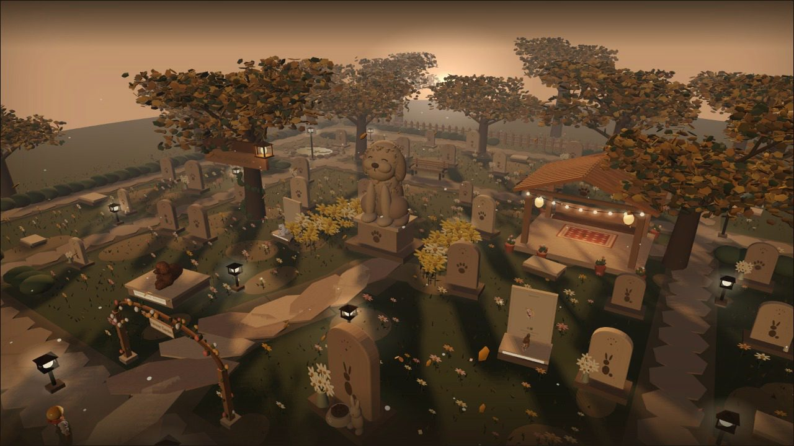
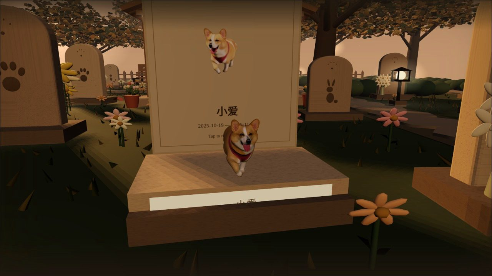
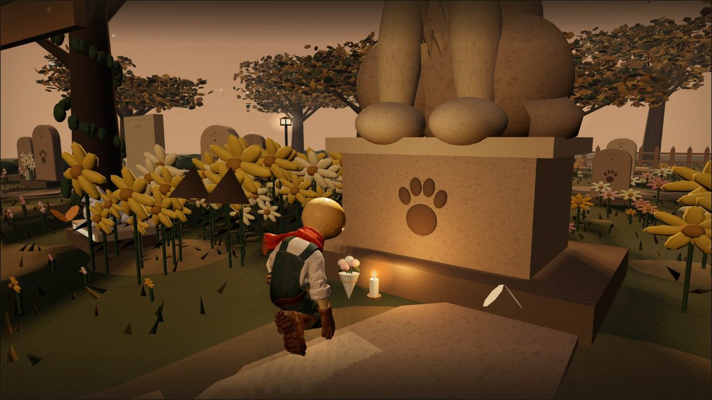

A free online pet memorial
A quiet garden where the pets we loved can stay
Forever Garden is a virtual pet memorial you can visit in your browser. Walk the paths at golden hour, sit for a while, and leave a flower.
I made this after losing my own pet, Xiao Ai (小爱). I wanted somewhere gentle to come back to — not a grave, but a small garden that stays open.
Free · no sign-up · works on a phone or a computer

A pet memorial garden, online
This is a shared 3D garden. Each memorial belongs to a pet someone loved. You can add yours, or simply walk among them and leave something kind.
-
Upload a photo
Choose a clear picture of your pet. You do not need an account, and you do not have to use your real name.
-
A little figurine appears
The garden turns the photo into a small 3D figurine and places it on a memorial in the shared garden.
-
Others can visit
Anyone who comes by can leave flowers, light a candle, or write a short message. You can come back whenever you need to.


Free, with honest limits
The garden is free, and it always will be to walk through. To keep it that way, only a few new figurines can be made each day, and each device can create up to three. If today’s places are taken, you can still visit, leave a flower, or try again tomorrow.
A note on privacy: we do not ask you to sign up, and we do not collect your name or email. A photo you upload is used to create the figurine. The figurine, and any message you choose to leave, are visible to other visitors — this is a shared garden, not a private vault.
Questions people often ask
Is this free online pet memorial really free?
Yes. Forever Garden is free to visit and free to use. There is no sign-up, and no app to download. It runs in your browser on a computer or a phone.
How does a virtual pet memorial work here?
You upload a photo of your pet. The garden turns it into a small 3D figurine and places it on a memorial in a shared garden at golden hour. Other visitors can leave flowers, light a candle, or write a short message.
Do I need an account?
No. You can walk the garden, leave a flower, or create a figurine without creating an account or giving an email address.
What happens to the photo I upload?
The photo is used to create the figurine. We do not ask for your name or email. The figurine, and any message you choose to leave, are visible to other visitors in the shared garden.
How many figurines can be made?
To keep the garden free, only a few new figurines can be added each day, and each device can create up to three. If the garden is full for the day, you can still visit, leave flowers, or try again tomorrow.
Can I visit without uploading a photo?
Yes. You can walk the paths, sit in the pavilion, and leave flowers or a candle for someone else’s pet. The garden is meant to be a gentle place to visit, even if you never make a figurine.
Is this a substitute for counselling or a funeral?
No. It is only a small, quiet place to visit. If you need someone to talk to, the Blue Cross Pet Loss Support service is free and confidential.
The gate is open
If you would like to remember someone, or simply walk among the memorials for a few minutes, you are welcome.
Visit the pet memorial gardenTakes a moment to load the 3D garden · English or 中文